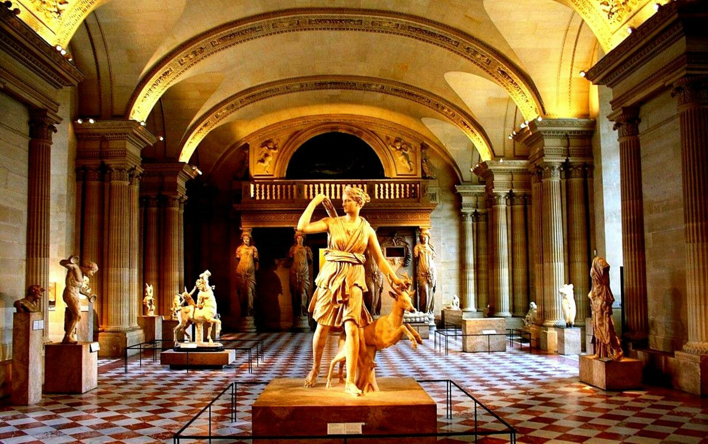
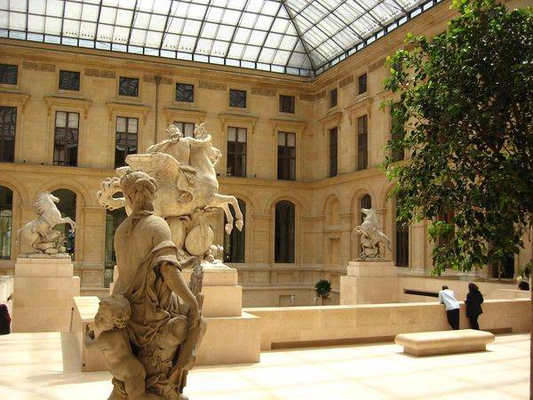
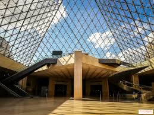
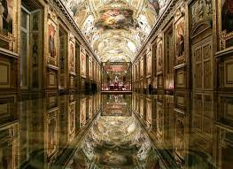

Luvr muzeyi: Dunyo san'ati va tarixining yuragi

Luvr muzeyi (fransuzcha Musée du Louvre) — dunyodagi eng mashhur, eng yirik va eng ko'p tashrif buyuriladigan san'at muzeylaridan biridir. U Fransiyaning poytaxti Parij shahrida, Sena daryosi bo'yida joylashgan. Luvr nafaqat san'at asarlari bilan, balki o'zining boy tarixi, me'morchiligi va madaniy ahamiyati bilan ham butun dunyoda tanilgan. Har yili millionlab sayyohlar ushbu muzeyga tashrif buyurib, insoniyat tarixining turli davrlariga oid bebaho durdonalarni tomosha qiladilar.
Luvrning tarixiy shakllanishi
Luvr muzeyi dastlab muzey sifatida emas, balki qal'a sifatida qurilgan. U 1190-yilda Fransiya qiroli Filipp II tomonidan Parijni tashqi hujumlardan himoya qilish maqsadida barpo etilgan. Keyinchalik qal'a o'z ahamiyatini yo'qotib, qirollik saroyiga aylantirildi. XVI asrga kelib, Fransiya qirollari Luvrni o'zlarining asosiy qarorgohlaridan biri sifatida ishlata boshladilar. XVII asrda qirol Lyudovik XIV Versal saroyiga ko'chib o'tgach, Luvr san'atkorlar, haykaltaroshlar va olimlar uchun maskanga aylandi. Nihoyat, 1793-yil 10-avgustda, Fransuz inqilobi davrida Luvr rasmiy ravishda ommaviy muzey sifatida ochildi. Dastlab unda 500 ga yaqin san'at asari bo'lgan bo'lsa, bugungi kunda bu raqam yuz minglab eksponatlarni tashkil etadi.
Me'moriy tuzilishi va shisha piramida
Luvr muzeyi me'morchilik jihatidan ham juda qiziqarli. Muzey bir necha asrlar davomida kengaytirilib, turli uslublarda qurilgan binolardan iborat. Uning eng mashhur zamonaviy ramzi — shisha piramida hisoblanadi. Ushbu piramida 1989-yilda xitoy-amerikalik me'mor I. M. Pey tomonidan loyihalashtirilgan. Shisha piramida dastlab jamoatchilik tomonidan bahsli qarshi olingan bo'lsa-da, bugungi kunda Luvrning ajralmas belgisi va Parijning zamonaviy ramzlaridan biriga aylangan. Piramida muzeyning asosiy kirish qismi bo'lib, qadimiy me'morchilik bilan zamonaviy dizaynning uyg'unligini ifodalaydi.
Luvrdagi bo'limlar va kolleksiyalar

Luvr muzeyi juda katta bo'lib, u 8 ta asosiy bo'limga bo'lingan:
- Qadimgi Sharq san'ati
- Qadimgi Misr san'ati
- Qadimgi Yunon, Etrusk va Rim san'ati
- Islom san'ati
- Haykaltaroshlik
- Tasviriy san'at (rasmlar)
- Grafika san'ati
- Qirollik saroyi va bezak san'ati
Bu bo'limlarda miloddan avvalgi ming yilliklardan XIX asrgacha bo'lgan davrlarni qamrab olg an asarlar namoyish etiladi. Luvr kolleksiyasi insoniyat sivilizatsiyasining deyarli barcha bosqichlarini aks ettiradi.
Eng mashhur asarlar
Luvr muzeyida dunyoga mashhur ko‘plab san’at durdonalari mavjud. Ulardan eng taniqlilari quyidagilar:
- “Mona Liza” — Leonardo da Vinchi tomonidan chizilgan bu asar dunyodagi eng mashhur rasm hisoblanadi. Uning sirli tabassumi asrlar davomida insonlarni hayratga solib kelmoqda.
- “Samotrakiya Nikesi” — qanotli g‘alaba ma’budasi haykali bo‘lib, yunon haykaltaroshligining eng yuksak namunalaridan biridir.
- “Milo Venerasi” — go‘zallik ma’budasi Afrodita haykali bo‘lib, nafisligi bilan mashhur.
- “Hammurapi qonunlari” — qadimgi Bobil davriga oid tosh ustunga o‘yib yozilgan qonunlar majmuasi.
- “Ozodlik yetaklayotgan xalq” — Ejen Delakrua tomonidan chizilgan, Fransuz inqilobini aks ettiruvchi mashhur kartina.
Bu asarlar Luvrning shunchaki muzey emas, balki butun insoniyat tarixini saqlovchi xazina ekanini ko‘rsatadi.
Luvrning madaniy ahamiyati
Luvr muzeyi faqat san’atni namoyish etish bilan cheklanmaydi. U ilmiy tadqiqotlar, ta’lim dasturlari, xalqaro ko‘rgazmalar va madaniy tadbirlar markazi ham hisoblanadi. Muzey yoshlar, talabalar va tadqiqotchilar uchun katta ilmiy manba bo‘lib xizmat qiladi. Shuningdek, Luvr boshqa davlatlar bilan hamkorlikda turli loyihalarni amalga oshiradi. Masalan, Abu-Dabidagi Luvr muzeyi Fransiya bilan hamkorlikda tashkil etilgan bo‘lib, Luvr brendining global miqyosda qanchalik kuchli ekanini ko‘rsatadi. Luvr muzeyi — bu oddiy bino yoki eksponatlar majmuasi emas. U insoniyat tarixining tirik guvohi, san’at va madaniyatning beqiyos xazinasi hisoblanadi. Har bir zali, har bir asari o‘ziga xos hikoyani so‘zlaydi. Luvrga tashrif buyurish — bu vaqt bo‘ylab sayohat qilish, qadimiy sivilizatsiyalardan tortib zamonaviy san’atgacha bo‘lgan yo‘lni his etish demakdir. Shu sababli Luvr muzeyi dunyo madaniyatining yuragi sifatida e’tirof etiladi va u kelajak avlodlar uchun ham bebaho meros bo‘lib qolaveradi.